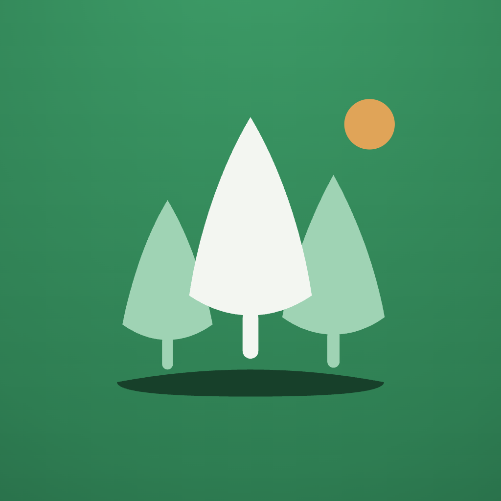

Why Grovely exists
Focus apps treat attention as a solo discipline. Grovely treats it as something you cultivate with people you like. One tree grows while you stay present; a whole grove grows when your circle shows up together.
Make deep focus feel less like discipline and more like tending a garden — with friends.
For students and knowledge workers (18–35) who focus better together. Where solo timers reward willpower, Grovely rewards showing up for your circle — 6 to 12 people, one shared grove, a friendly weekly league.
Nature with lightness. Never clinical, never a productivity drill sergeant.
Plant. Grow. Grove.
Three verbs carry the whole product. Every screen, notification and marketing line should map to one of them.

Pick a species, set the timer, put the phone down. Every session begins as a seed with a promise attached.

Stay present and the tree grows in real time. Leave early and it gently withers — a soft consequence, never a punishment. Finished trees join your personal garden.

The differentiator. Focus live with your circle of 6–12 and a shared grove blooms — one tree per person, growing side by side. A weekly league keeps it warm, not cutthroat.
"8 of 12 focusing now" is the most important sentence in the product. Presence — seeing your people focus in real time — is what no solo timer can copy. Design for that feeling first.
The grove, redrawn
v6 trades the geometric triangles for organic silhouettes with depth: two lighter companions behind, one deep-green tree in front, warm trunks and shared sandy ground. Same story — people at different stages growing on the same soil, a small sun keeping watch — now drawn with the softness of the illustrations.
Below 24 px, drop the sun and ground — trees alone. Toggle clear-space guides in Tweaks.
Never do this
A jewel on the home screen
The v6 icon puts the redrawn grove on a deep-green field with a soft top glow — the light source that makes the front tree read as ivory, not gray. Regenerated at 1024 px, opaque, square source.

#2E7D52#F3F6F1, companions #9FD3B4, sun always amber.Leaf leads, sun accents
Light mode is the garden by day; dark mode is the focus session at night. Every text-on-fill pairing shown here clears WCAG AA (4.5:1 body, 3:1 large type).
A voice with roots, a body that works
Quirky enough to feel alive, sturdy enough to trust. Weights 500–800; tracking −2% to −3.5% at display sizes.
Humanist, warm, quietly legible at 13–17 px. Weights 400–700; never tracked tighter than −1%.
H1 · 32/700H2 · 23/600Title · 17/600Body · 15/400Label · 12.5/700Trees worth staring at
You look at a tree for 25 minutes straight — it has to be beautiful. Illustration 2.0 keeps the organic-soft construction and adds three moves: a deep back-canopy for depth, a top-left highlight cluster for light, and one warm accent (fruit, cone or petal) so every species carries a touch of sun. Still flat fills, still flutter_svg-safe.
 seedsprout
seedsprout saplingyoungmature
saplingyoungmature elder
elder centenarian ✦
centenarian ✦ left early · witheredstayed present · thriving
left early · witheredstayed present · thrivingWithered trees keep the same silhouette in muted earth tones — melancholy, not gruesome. They stay in the garden as honest history.
flutter_svg-safe.A gardener, not a coach
Grovely speaks like a friend who gardens: observant, warm, a little playful. We narrate growth, we never audit performance.
"Your oak grew 25 minutes taller."
"Session complete. +25 XP."
"This one withered. The soil's still good — plant another?"
"You killed your tree. Streak lost."
"8 friends are focusing right now. Pull up a patch of soil."
"You're falling behind your circle!"
"Morning Sprinters grew 412 minutes of forest this week 🌱"
"RANK UP! You crushed Library Owls."
The identity in motion
The full core loop: arrive, plant, grow, celebrate, garden, grove, compete, reflect. Dark for the session, light for everything social. Every value here maps 1:1 to the tokens above.


Everything ships in brand/
brand/ ├── brand-book.html ← this document ├── tokens.json ← light/dark + type + radius ├── logo/ │ ├── grovely-symbol-v6.svg ← NEW organic mark │ ├── grovely-wordmark.svg │ └── grovely-logo-mono.svg ├── icon/ │ ├── grovely-icon-v6-1024.png ← NEW │ └── grovely-adaptive-foreground-v6-1024.png ← NEW ├── trees/ ← 6 species × all stages (SVG) │ fully regenerated in 2.0 style ├── trees-v1/ ← previous library, archived └── mockups/ ← reference PNGs · 8 screens in §09
<use>; text in curves; direct fills; no fixed px dimensions.